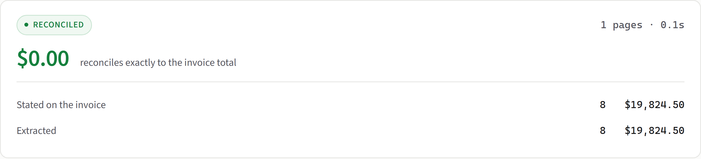

A converter that drops 4 rows out of 95 produces a file that looks
exactly like a correct one. For financial records that's worse than no tool at
all — because it gets trusted.

real output · synthetic invoice
1It reconciles against the invoice's own stated total.Extracted vs. stated, before you download.
2Every excluded row is reported in four places.Console, log, workbook metadata, batch summary.